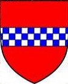

1502283 Lady Eleanor Douglas of Douglas
* omkring 1375 Douglasdale, Lanarkshire, Scotland
† omkring 1425 Scotland
Blev ca 50 år
* omkring 1375 Douglasdale, Lanarkshire, Scotland
† omkring 1425 Scotland
Blev ca 50 år
3004566 Earl James Douglas 2nd Earl of Douglas
* 1358 Douglasdale, Lanarkshire, Scotland
† 1388-08-14 Slaget vid Otterburn
Blev högst 30 år
* 1358 Douglasdale, Lanarkshire, Scotland
† 1388-08-14 Slaget vid Otterburn
Blev högst 30 år
6009132 Earl William Douglas 1st Earl of Douglas
* 1327 Douglasdale, Lanarkshire, Scotland
† 1384-05 Douglasdale, Lanarkshire, Scotland
Blev högst 57 år
* 1327 Douglasdale, Lanarkshire, Scotland
† 1384-05 Douglasdale, Lanarkshire, Scotland
Blev högst 57 år
12018264 Regent Archibald Douglas of Scotland
* omkring 1297 Douglasdale, Lanarkshire, Scotland
† 1333-07-19 Beerwick-Upon- Tweed, Northumberland, England
Se notering!
Blev ca 36 år
* omkring 1297 Douglasdale, Lanarkshire, Scotland
† 1333-07-19 Beerwick-Upon- Tweed, Northumberland, England
Se notering!
Blev ca 36 år

12018265 Lady Beatrice de Lindsey of Crawford
* omkring 1305 Crawford, Lankarshire, Scotland
† omkring 1352 Stirling Castle, Stirlingshire, Scotland
Blev ca 47 år
* omkring 1305 Crawford, Lankarshire, Scotland
† omkring 1352 Stirling Castle, Stirlingshire, Scotland
Blev ca 47 år

6009133 Countess Margaret 10th of Mar & Douglas
* omkring 1329 Kildrummie, Aberdeenshire, Scotland
† 1391 Douglasdale, Lanarkshire, Scotland
Hertiginna
Blev ca 62 år
* omkring 1329 Kildrummie, Aberdeenshire, Scotland
† 1391 Douglasdale, Lanarkshire, Scotland
Hertiginna
Blev ca 62 år
3004567 Okänd